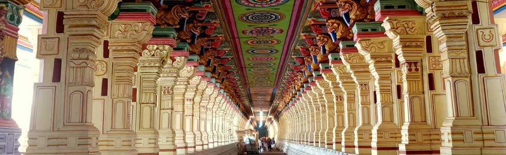

Tamil Nadu
Rameswaram: Rama's Bridge
Step onto the sacred island of Rameswaram, a land sanctified by the footsteps of Lord Rama himself. As one of the original four Char Dhams and home to a powerful Jyotirlinga, this Tirtha is where the great traditions of Shaivism and Vaishnavism merge. To be here is to witness the living legacy of the Ramayana and to experience the profound unity of Dharma.
The Puranic Origin: Atonement and Devotion
As narrated in the Ramayana, after the victorious war in Lanka and the defeat of the learned demon-king Ravana, Lord Rama was advised by the sages to atone for the sin of *Brahmahatya* (the killing of a Brahmin). To do so, he decided to consecrate a Shivalinga and worship Lord Shiva. He dispatched Hanuman to bring a lingam from Mount Kailash. When Hanuman was delayed, Goddess Sita fashioned a lingam from the sand of the seashore, which Rama then consecrated. This became the principal deity, Ramanathaswamy—"The Lord worshipped by Rama."
Key Spiritual Experiences
Ramanathaswamy Temple Darshan: The magnificence of this temple is breathtaking, renowned for having the longest temple corridor in the world. Pilgrims first worship the sand lingam made by Sita before offering prayers to the Vishwalingam brought by Hanuman from Kailash.
The 22 Teerthams Snan: A unique and essential ritual at Rameswaram is the sacred bath in the 22 holy water bodies, or *Teerthams*, located within the temple complex. Each well and tank is believed to possess unique purifying powers, and a bath in all 22 is said to wash away a lifetime of sins.
Dhanushkodi and Rama Setu: A journey to Dhanushkodi, the southernmost tip of the island, is a pilgrimage to the end of the land. It is here that one can witness the Adam's Bridge, or *Rama Setu*, the chain of limestone shoals that Lord Rama's Vanara army built to cross over to Lanka. A holy dip at the confluence of the two seas here is considered an act of immense merit.